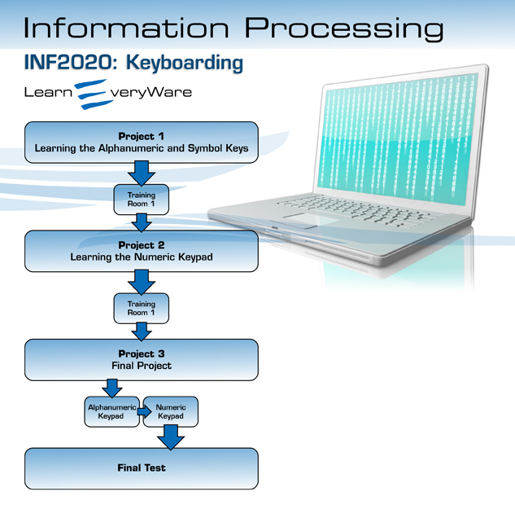

Orientation
Introduction
© Steve Cole/Photodisc/Getty Images
Have you ever watched someone typing quickly and accurately, seldom looking at the keys or at his or her fingers? Did you ever wish that you could type like that? Think of how much time you waste using the “hunt-and-peck” method of typing, searching the keyboard for each letter. By selecting INF2020: Keyboarding, you are well on your way to becoming a proficient touch typist!
Your goal, however, might not be an easy one to achieve. You might occasionally be faced with frustration, tired muscles, and perhaps even boredom. It will sometimes be difficult to maintain your concentration and your motivation to continue. However, you will reach your goal if you do these four things: establish a routine, give yourself the time you need to develop your skills, celebrate your successes, and believe in yourself and your ability to succeed.
History books are full of people who accomplished great things. It’s easy to let yourself believe that these people simply had extraordinary talents and that their accomplishments were, therefore, achieved easily. The truth is that these people did great things simply because they were motivated to do so. They often had to overcome great adversity to achieve their goals; yet they persevered, made sacrifices, battled fatigue, endured discomfort, ignored their critics, and overcame negative thoughts and self-doubt. Their determination drove them on until they were rewarded by reaching their goals.
In this course you will be introduced to the standard QWERTY keyboard and the numeric keypad, as well as proper touch typing technique. You will be encouraged to practise skills throughout the course and work through activities that will provide evidence of your development. Successful completion of this course will earn you one credit.
Software Requirements
You will need access to any kind of computer that has word-processing software, such as Microsoft® Word®, WordPerfect®, ClarisWorks®, or Google Docs. All demonstrations and videos will show Microsoft® Word® 2007 being used. If you have different software, that is fine. Any software will do.
You will be shown how to set up a folder on your computer in which to save your documents and assignments. For all of the typing, you should change the font to 12 point, Courier. Font options are found on the menu bars at the top.
Access to a printer is also recommended for submitting assignments in paper form.
File Management
All the documents you create in Keyboarding should be saved. Select the location in which you wish to store your documents by opening the desired file on the save screen. The location prompt is given only when you save the document for the first time. To relocate your document at any other time, highlight the document title or icon by clicking on it once. Then drag it to the desired location or folder.
To see how to create a folder on your desktop, watch “Creating a Folder on Your Desktop.” This demonstration is also located in the Toolkit for quick access at any point throughout this course.
Time Management
© jon le-bon/shutterstock
Spend as much time practising typing as you feel you need. You may find that you work better at certain times of the day. If this is the case, choose to do your typing assignments at the time that is best for you. You may find that a diversion from serious typing may help you.
It is recommended that you take frequent breaks. If you find you are starting to make a lot of errors, stop for awhile. Then start again when you feel ready. Be careful not to leave too much time between practice sessions, as you can lose some of what you did learn. Practise every day, even if it’s just for a half-hour on some days.
This course will take you 16–25 hours to complete. You should regularly self-assess your progress by completing practice time trials. Refer to the assessment charts for speed and accuracy and use them as your guide. When you have completed all coursework and have practised extensively, you may be ready for the final test.
Icon Legend
This icon alerts you to project work that will be submitted for assessment.
This icon signifies that a scoring rubric is accessible to you to see how you may be scored on a particular assessment piece.
This icon shows you that you are about to complete a timed activity.
This icon shows that a safety tip has been provided.
This icon alerts you to a toolkit item.
This icon shows you that an important tip or hint has been provided.
This icon signifies that you are linking to an external document.
This icon alerts you to a guided search you will need to perform.
Toolkit
Have a question? Need some help? Check out the toolkit!
The INF2020 toolkit provides links to specific demonstrations that can be referred to at any time throughout this course. A link to the toolkit is available in the menu on the left, so you don't have to navigate back through the course to find the information you need.
Project Descriptions
- Project 1—Learning the Alphanumeric and Symbol Keys
This project introduces you to most of the keys on the alphanumeric keypad and provides exercises and practice to develop your speed and accuracy.
- Project 2—Learning the Numeric Keypad
This project introduces you to the keys on the numeric keypad and provides exercises and practice to develop your speed and accuracy.
- Project 3—Final Project
This final project is an interactive timed trial on the alphanumeric keypad and the numeric keypad. It is the final self-assessment of your readiness to attempt the final test.
- Project Skill Level
These projects are for all levels of typists. The goal of these projects is to introduce you to the keys on the keyboard and to develop your skills as a proficient and fast touch typist.

© PhotoStocker/shutterstock
Project Skill Level
Expert/Master |
Proficient |
Competent |
Limited |
No Evidence |
To obtain credit from Alberta Education, you must demonstrate all outcomes and obtain a course grade of 50%.
Environmental Impact
Stop before you print!
Can you think of ways of recycling to reduce computer waste?
- paper reduction and recycling
- toner cartridge recycling
- computer equipment recycling
Save power by turning off your hardware when you are finished for the day.